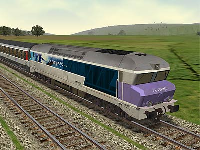
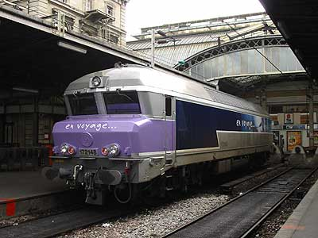
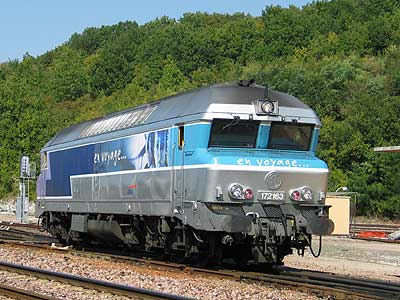

La CC 72100 version 
Bruno Terrien a réalisé la CC 72148 pour MSTS téléchargeable sur le site Dépôt SNCF Virtuel

CC 72100
Paris - Mulhouse - (Bâle) reste aujourd'hui l'unique grande radiale où les CC 72000 sont en service. Il y a encore peu de temps, les machines préchauffaient au dépôt de la Villette. Ce qui provoquait la colère des riverains accusant la SNCF des pics de pollution. L'électrification de cette ligne n'étant pas au programme, il fallait agir sur le matériel roulant. Outre le report du préchauffage au chantier de l'Ourcq et l'engagement d'automoteurs X 72500 sur les Paris-Culmont Chalindrey, il restait le problème des trains GL reliant Bâle à la capitale.
Puisqu'aucune machine thermique moderne n'était susceptible de remplacer les CC 72000, il fallait les modifier. Les 72075 et 72044 avaient testé de 1987 à 2000 le moteur SEMT Pielstick 16 PA 4-200 VGA pour équiper la future génération de locomotive thermique. Ce moteur donnant satisfaction, c'est une version améliorée de celui-ci qui fut retenue pour remotoriser 30 machines. Par rapport aux AGO, il est plus léger, plus compact pour une puissance semblable. Il est surtout moins polluant et se distingue par une "géométrie variable".
Il est décidé par ailleurs de différencier radicalement les machines rénovées en leur appliquant la nouvelle livrée "En Voyage" qui se prépare alors dans le plus grand secret.
En juillet 2002, la 72048 sort des ateliers de Quatre-Mare dans une livrée gris métallisé intégrale comme la 72045 mais elle est renumérotée 72148. Elle effectue plusieurs allez-retours sur le trajet Paris Rouen en essai avec une rame V2N le 31 juillet.
Après la phase de tests, le pelliculage est en partie terminé pour l'inauguration de cette première machine "écologique", La voie est ouverte pour la rénovation des 29 suivantes. Le programme de rénovation s'achèvera à la mi-2004.
Quelques données techniques
Motorisation : moteur diésel SEMT-Pielstick 16 PA 4-200 VGA
Puissance totale : 2650 kW (moteur thermique), 2250 kW à la jante.
Longueur : 20,19m
Masse : 109t
Machine remarquable de la série
La 72148 fut la première machine transformée. Elle a donc eu les honneurs de l'inauguration officielle de la série le 26 novembre 2002. Elle porte un pelliculage spécialement posé pour l'occasion montrant les logos de la région Ile-de-France, de l'état et de la SNCF et la mention: "Cette locomotive respecte votre environnement"
Pour plus d'info :
La fiche CC 72100 sur Wikipedia
L'inventaire des CC 72100 sur Trains du Sud-Ouest

La CC 172148 dont le pelliculage est encore incomplet à Paris Est (26/10/2002)

La CC 172163 à Longueville (21/09/2003)
La CC 72100 version 
Bruno Terrien a réalisé la CC 72148 pour MSTS téléchargeable sur le site Dépôt SNCF Virtuel